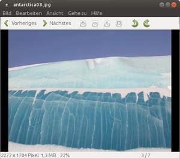

Eye of MATE
Dieser Artikel wurde für die folgenden Ubuntu-Versionen getestet:
Ubuntu 16.04 Xenial Xerus
Ubuntu 14.04 Trusty Tahr
Zum Verständnis dieses Artikels sind folgende Seiten hilfreich:
Eye of MATE ist der Standard-Bildbetrachter der Desktopumgebung MATE. Das Programm ist mehr als nur ein einfacher Bildbetrachter. Einfache Editier- und die Exportfunktion machen es zu einem nützlichen Helfer. EoM ist schnell zu starten und leicht zu bedienen.
Folgende Bildformate werden unterstützt:
ANI - Animation
BMP - Windows Bitmap
GIF - Graphics Interchange Format
ICO - Windows Icon
JPEG - Joint Photographic Experts Group
PNG - Portable Network Graphics
PNM - Portable Anymap from the PPM Toolkit
RAS - Sun Raster
SVG - Scalable Vector Graphics
TGA - Targa
TIFF - Tagged Image File Format
WBMP - Wireless Bitmap
XBM - X Bitmap
XPM - X Pixmap
Das Programm selbst ist eine Abspaltung (Fork) von Eye of GNOME, dem Standard-Bildbetrachter von GNOME 3 (der auch unter Unity genutzt wird). Alternative Programme sind im Artikel Grafik zu finden.
Installation¶
 Eye of MATE wird bei der Installation von Ubuntu MATE automatisch installiert. Sollte man eine andere Desktop-Umgebung nutzen, so kann man EoM ab Ubuntu 14.10 nachinstallieren [1]:
Eye of MATE wird bei der Installation von Ubuntu MATE automatisch installiert. Sollte man eine andere Desktop-Umgebung nutzen, so kann man EoM ab Ubuntu 14.10 nachinstallieren [1]:
eom (universe)
 mit apturl
mit apturl
Paketliste zum Kopieren:
sudo apt-get install eom
sudo aptitude install eom
Bedienung¶
Bei Ubuntu-Varianten mit einem Anwendungsmenü kann das Programm über "Grafik -> EOM-Bildbetrachter" gestartet werden [2]. Das Programm bietet viele nützliche Dinge. Diese sind entweder in der Werkzeugleiste oder im Menü zu finden:
| Aktionen (Auswahl) | |
| Symbol | Zweck |
| Das nächste Bild im Ordner wird angezeigt | |
| Das vorherige Bild im Ordner wird angezeigt | |
 | Vergrößern der Ansicht |
 | Verkleinern der Ansicht |
 | Bild in Originalgröße anzeigen |
 | Bild in Fenster einpassen |
| Bild 90° links drehen | |
| Bild 90° rechts drehen | |
| Horizontal spiegeln | |
| Vertikal spiegeln | |
Einige weitere Funktionen findet man in den anderen Menüpunkten. Möchte man diese dauerhaft auf der Symbolleiste sichtbar machen, wählt man "Bearbeiten -> Werkzeugleiste".
Bildbearbeitung¶
Bilder können gedreht und gespiegelt werden. Dies erlaubt ein erstes Bearbeiten von Photos. Außerdem gestattet das Programm den Export von Bildern in ein anderes Dateiformat.
Metadaten¶
Bei Bilddateien im Format Joint Photographic Experts Group (JPG) betten Digitalkameras Informationen zum jeweiligen Bild als Metadaten ein. Dazu zählen unter anderem:
Kamera (Modell)
Bilddaten (z.B. Aufnahmedatum, Kompression und Auflösung)
Aufnahmebedingungen (Belichtungszeit, Programm, Blendeneinstellung et cetera)
Herstellernotizen und vieles andere mehr
Zu finden sind diese Informationen (wenn vorhanden) unter "Bild -> Eigenschaften -> Metadaten" und "Bild -> Eigenschaften -> Details". Sollten die Bilder bearbeitet worden sein, bleiben alle vorhandenen Exif-Daten erhalten und werden entsprechend angepasst.
Export¶
Im Programm geöffnete Bilder können durch "Bild -> Speichern unter..." in einem vom Bildbetrachter unterstützten Format gespeichert werden:
BMP - Windows Bitmap
ICO - Windows Icon
JPEG - Joint Photographic Experts Group
PNG - Portable Network Graphics
Zusatzfunktionen¶
Diashow¶
Um die Bildersammlung als Diashow zu betrachten, muss man diese unter "Ansicht -> Diashow" starten.
Drucken¶
Um einen Ausdruck des gerade betrachteten Bildes zu machen, kann man unter "Bild -> Drucken..." anwählen.
Hintergrundbild¶
Möchte man das gerade betrachtete Bild als Hintergrund für den Desktop nutzen, wählt man unter "Bild -> Als Hintergrundbild" oder Strg + F8 aus.
Vollbild¶
Um das Bild im Vollbild zu betrachten, genügt es, unter "Ansicht -> Vollbild" zu aktivieren. Durch Drücken von Esc kann man diesen Modus wieder verlassen.
Tastenkürzel¶
| Tastenkürzel (Auswahl) | |
| Taste | Funktion |
| F5 | Diashow |
| F9 | Bildersammlung |
| F11 | Vollbild |
| → | Zum nächsten Bild im Verzeichnis wechseln |
| ← | Zum vorherigen Bild im Verzeichnis wechseln |
| Strg + P | |
| Strg + Z | Aktion rückgängig machen |
| Strg + W | Programm beenden |

 Programmübersicht
Programmübersicht- Erstellt mit Inyoka
-
 2004 – 2017 ubuntuusers.de • Einige Rechte vorbehalten
2004 – 2017 ubuntuusers.de • Einige Rechte vorbehalten
Lizenz • Kontakt • Datenschutz • Impressum • Serverstatus -
Serverhousing gespendet von